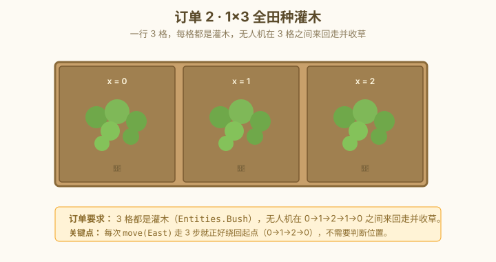

🎮 游戏进度 · 课前准备
📌 课前先把游戏跑起来
- 在 Steam 上下载 The Farmer Was Replaced，打开进入默认农场（3×3）。
- 左侧是代码编辑器，下方有「执行」按钮，右侧是无人机干活的小窗口。
- 什么都不种，先点执行——能看到无人机原地不动（因为没写动作）。
- 记住三个最常用的 API：
harvest()（收割）、move(方向)（移动）、can_harvest()（能不能收）。
trade() 已被移除，浇水改成 use_item(Items.Water)；Grounds.Turf 改成 Grounds.Grassland。如果你照老脚本跑报错，先看游戏里能不能点出这个 API。
📖 知识卡 · 3 张
① while True：让无人机不停干活
这一关只需要两个动作：循环和判断。while True 的意思是"永远循环下去"，是自动化脚本的标准开头。
while True:
# 下面这些动作每轮都执行一遍
if can_harvest():
harvest()
move(East)⚠️ 注意缩进：第二行前面的空格不能漏，Python 是用缩进判断"哪些代码属于循环内"的。
② if / else：让程序会"思考"
判断会返回 True 或 False，如果是 True 就跑 if 下面的代码，否则跳过（或跑 else 下面的）。
if can_harvest(): # 能收吗？
harvest() # 能就收
else:
pass # 不能就算了（pass 是"什么都不做"）③ for i in range：为什么要 for？
while 是"不知道要循环几次"的时候用，for 是"我清楚地知道要循环 N 次"的时候用——比如"扫 3 行 3 列共 9 格"。
for i in range(3): # i 会依次变成 0, 1, 2
for j in range(3): # j 也会依次变成 0, 1, 2
do_something() # 这行会跑 3 × 3 = 9 次📌 range(n) 产生 0, 1, 2, ..., n-1 共 n 个数。range(get_world_size()) 适配任何大小的田。
订单 3 用 for i in range(get_world_size()) 套 for j in range(get_world_size()) 扫全田——比 while 嵌套手动维护 i、j 干净 10 倍。
🚜 农场订单 · 3 个由小到大
1×1：单格反复收草
set_world_size(1)），无人机站在唯一的一格里，不停地收草，直到库存超过 50。
起步骨架（点开前先自己想）
set_world_size(__________) # 1×1 while True: if __________(): __________()
1×3：走 3 步扫一行

起步骨架（点开前先自己想）
set_world_size(1, 3) # 1 行 3 列
while True:
if __________():
__________()
__________(East) # 走 1 步；走 3 步后自动绕回起点
3×3：全田扫一遍（for 循环登场）
for i in range(3) 嵌套 for j in range(3) 扫全田，每格能收就收。跑完一轮 9 格后停止。

for i in range(3) 嵌套 for j in range(3) 扫全田——9 格全收完，循环结束。起步骨架（点开前先自己想）
for i in __________: # 外层：3 行 for j in __________: # 内层：3 列 if __________: __________ move(East) # 内层循环：每行从左走到右 move(North) # 外层循环：走完一行就往北换行
跑通后试着把 range(3) 改成 range(get_world_size())，然后用 5×5、10×10 的世界再跑——代码一行不用动，适配任何大小的田。这就是 for 循环存在的意义。
🔧 常见报错 · 卡住了先看这里
IndentationError: unexpected indent → 缩进对不齐。第 2 行前面必须比第 1 行多 4 个空格。复制代码后最容易出这个错。
SyntaxError: expected ':' → if 或 while 后面忘了冒号。
无人机在原地抖动 → can_harvest() 写成了 can_harvest（漏了括号）。Python 看到没括号的"函数名"会当变量，不会执行。
只走一格就停 → while 没写 True，或者根本没写 while。
🚪 自查门 · 打完勾才能进 S2
🎉 闯关成功！能勾完上面 4 个 + 跑通 2 个订单，再进 S2。S1 没勾完就往下走，后面会越学越糊涂。